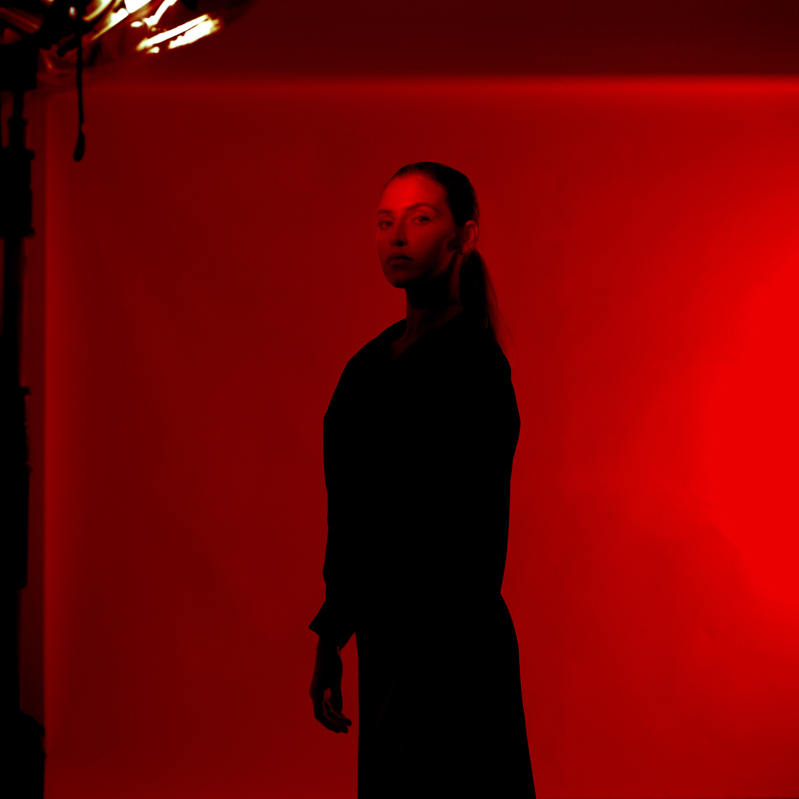
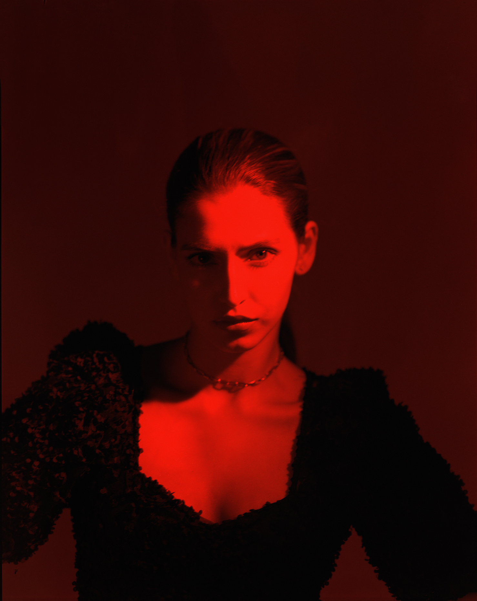

Creative Direction & Photography: Mena Assad
Photography Assistants: Omar Kafrawy and Ismail Sabet
Shot on Portra 400 and Portra 800
Hand-developed C-41 and pushed one to two stops
Scanned at The Darkroom Cairo and Bayeux London
Subjects & Collaborators
Nancy Assad for Red
Mariam Makram for Blue
Hennessy for Yellow
“But what am I going to see?
I don't know. In a certain sense, it depends on you.”
Stanislaw Lem, Solaris
Studies in Emotion is a series of portraits that explores the
contextualization of color in our cognitive experiences. Color, as
Swiss linguist Ferdinand Saussure opines, is just a “system of
signifiers." Color is inescapably personal yet we all recognize the
power and effect that it has in our lives. Using color as the key
signifier, the sitter’s emotions are left to the viewer to interpret.
Does red suggest passion or danger? Is this the blue of calmness or
melancholia? Is yellow a colour of hope, nostalgia, madness or
cowardice?